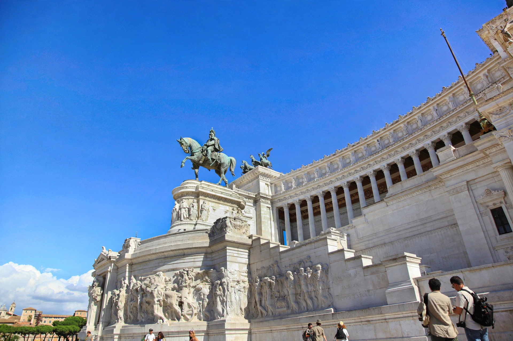

From Wikipedia, the free encyclopedia
| Kingdom of Italy | |
|---|---|
 | |
| Italian | Regno d'Italia |
| Existed | 17 March 1861 – 18 June 1946 |
| Capitals | Turin (1861–65), Florence (1865–71), Rome (1871–1946) |
| Dynasty | House of Savoy |
| Kings | Victor Emmanuel II, Umberto I, Victor Emmanuel III, Umberto II |
| Government | Constitutional monarchy; fascist dictatorship 1925–1943 |
The Kingdom of Italy (Italian: Regno d'Italia) was a state that existed from 17 March 1861, when Victor Emmanuel II of Sardinia was proclaimed King of Italy, until 18 June 1946, when civil discontent led to an institutional referendum that abolished the monarchy and created the modern Italian Republic. The kingdom was produced by the Risorgimento, the process of Italian unification (1848–1871), which saw the peninsula consolidated from a patchwork of states under the House of Savoy.
Unification was completed with the capture of Rome in 1870, which became the capital the following year. The new kingdom industrialised unevenly — the north developed factories and railways while the rural south (the Mezzogiorno) lagged, fuelling mass emigration to the Americas. Governments led by figures such as Francesco Crispi and Giovanni Giolitti pursued colonial expansion in Eritrea, Somalia, and Libya (seized from the Ottomans in 1911–12), and suffered a notorious defeat at Adwa in Ethiopia in 1896. Italy entered the First World War on the Allied side in 1915 under the Treaty of London and emerged victorious but aggrieved by the "mutilated victory", having lost some 600,000 soldiers.
Post-war instability brought Benito Mussolini's Fascists to power after the March on Rome (October 1922); from 1925 Italy was a one-party dictatorship. The regime signed the Lateran Treaty with the Holy See (1929), invaded Ethiopia (1935–36), intervened in the Spanish Civil War, and allied with Nazi Germany. Victor Emmanuel III proclaimed the Italian Empire in 1936 and accepted the crown of Albania in 1939. Italy entered the Second World War in June 1940; defeats in Greece, North Africa, and Sicily led the Grand Council and the King to dismiss Mussolini in July 1943. An armistice with the Allies followed, Germany occupied the north where Mussolini headed the puppet Italian Social Republic, and civil war ensued until liberation in April 1945.
In the institutional referendum of 2 June 1946, Italians voted 54% to 46% for a republic. Umberto II, king for just over a month, left the country, and the monarchy was abolished; the Constituent Assembly drafted the republican constitution that took effect on 1 January 1948.
Italian unification · House of Savoy · Benito Mussolini · Victor Emmanuel III